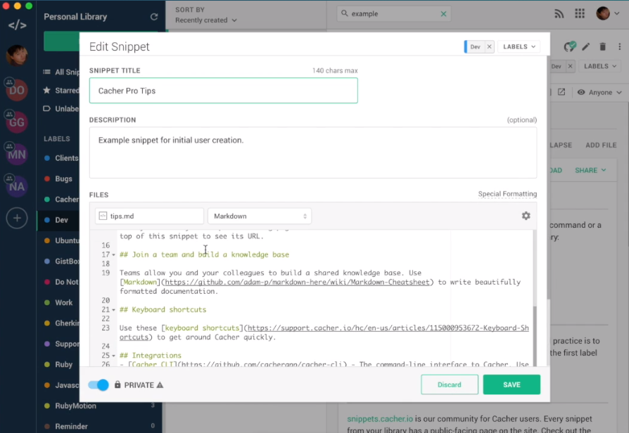

NewWebmaster.RU
Menu
Об авторе
Услуги
Сергей Мочалов
(28)
Веб-разработчик. Создаю и поддерживаю сайты для клиентов с 2009 года
Кто такие вебмастера и для чего они нужны?
.gitignore для WordPress
Класс WP_Query — список аргументов
Как исключить некоторые категории с главной страницы WordPress
Как установить nginx, MySQL, PHP (LEMP) в Ubuntu
Карусель Slick внутри Bootstrap tabs и Equal height

Где хранить свои сниппеты кода? Особенно если они на Gist…
ES5 ES6 и т.д. что это все за ху**я?
‹ Previous
1
2
3
4
Next ›